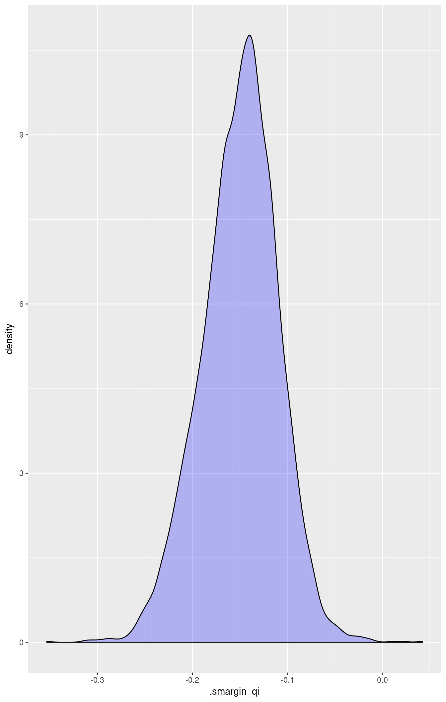

Logit Regression for Dichotomous Dependent Variables with Survey Weights with logit.survey.
Use logit regression to model binary dependent variables specified as a function of a set of explanatory variables.
Our example dataset comes from the survey package:
data(api, package = "survey")In this example, we will estimate a model using the percentages of students who receive subsidized lunch and the percentage who are new to a school to predict whether each California public school attends classes year round. We first make a numeric version of the variable in the example dataset, which you may not need to do in another dataset.
library(survey)## Loading required package: grid## Loading required package: Matrix##
## Attaching package: 'survey'## The following object is masked from 'package:graphics':
##
## dotchartapistrat.design <- svydesign(ids = ~1, weights = ~pw, data = apistrat)
m1 <- svyglm(yr.rnd ~ meals + mobility,
design = apistrat.design,
family = quasibinomial())
summary(m1)##
## Call:
## svyglm(formula = yr.rnd ~ meals + mobility, design = apistrat.design,
## family = quasibinomial())
##
## Survey design:
## svydesign(ids = ~1, weights = ~pw, data = apistrat)
##
## Coefficients:
## Estimate Std. Error t value Pr(>|t|)
## (Intercept) -5.29981 0.97979 -5.409 1.82e-07 ***
## meals 0.03746 0.01158 3.235 0.00143 **
## mobility 0.06069 0.02001 3.032 0.00275 **
## ---
## Signif. codes: 0 '***' 0.001 '**' 0.01 '*' 0.05 '.' 0.1 ' ' 1
##
## (Dispersion parameter for quasibinomial family taken to be 0.940999)
##
## Number of Fisher Scoring iterations: 6Set explanatory variables to their observed values, and set a high (80th percentile) and low (20th percentile) value for “meals,” the percentage of students who receive subsidized meals:
library(smargins)
m.sm1 <- smargins(m1, meals = quantile(meals, c(0.2, 0.8)))
summary(m.sm1)## meals mean sd median lower_2.5 upper_97.5
## 1 18.0 0.03161318 0.02207852 0.02562193 0.007244776 0.08909972
## 2 74.2 0.18169155 0.03941668 0.17847417 0.112966435 0.26736271Generate first differences for the effect of high versus low “meals” on the probability that a school will hold classes year round:
m.sm1.diff <- scompare(m.sm1, "meals")
summary(m.sm1.diff)## meals mean sd median lower_2.5 upper_97.5
## 1 18 vs 74.2 -0.1500784 0.04000775 -0.1474838 -0.2328644 -0.07629612Generate a second set of fitted values and a plot:
library(ggplot2)
ggplot(m.sm1.diff, aes(x = .smargin_qi)) +
geom_density(fill = "blue", alpha = 0.25)
Suppose that the survey house that provided the dataset excluded probability weights but made other details about the survey design available. We can still estimate a model without probability weights that takes instead variables that identify each the stratum and/or cluster from which each observation was selected and the size of the finite sample from which each observation was selected.
apiclus.design <- svydesign(ids = ~1, strata = ~stype, fpc = ~fpc, data = apistrat)
m2 <- svyglm(yr.rnd ~ meals + mobility,
design = apiclus.design,
family = quasibinomial())
summary(m2)##
## Call:
## svyglm(formula = yr.rnd ~ meals + mobility, design = apiclus.design,
## family = quasibinomial())
##
## Survey design:
## svydesign(ids = ~1, strata = ~stype, fpc = ~fpc, data = apistrat)
##
## Coefficients:
## Estimate Std. Error t value Pr(>|t|)
## (Intercept) -5.29981 0.96876 -5.471 1.36e-07 ***
## meals 0.03746 0.01145 3.270 0.00127 **
## mobility 0.06069 0.01929 3.145 0.00192 **
## ---
## Signif. codes: 0 '***' 0.001 '**' 0.01 '*' 0.05 '.' 0.1 ' ' 1
##
## (Dispersion parameter for quasibinomial family taken to be 0.940999)
##
## Number of Fisher Scoring iterations: 6The coefficient estimates from this model are identical to point estimates in the previous example, but the standard errors are smaller.
m.sm2 <- smargins(m2, meals = quantile(apistrat$meals, c(0.2, 0.8)))
summary(m.sm2)## meals mean sd median lower_2.5 upper_97.5
## 1 18.0 0.03127663 0.02207439 0.02584485 0.006952182 0.08708536
## 2 74.2 0.18148118 0.03959123 0.17758124 0.113059958 0.27000292